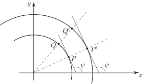

Long description: workbook134fig3

Alt text: A graph showing a curve in the first quadrant with two points, labeled P and Q, and associated angles, illustrating the concept of curvature.
This description was generated by AI and has not been verified by a human. If you spot an error, please use the feedback link below.
- The image displays a two-dimensional Cartesian coordinate system with a horizontal x-axis and a vertical y-axis, indicating the first quadrant.
- A smooth, curved line segment is drawn within the first quadrant, representing a curve.
- Two points, labeled P and Q, are marked on this curve, with P being further along the curve from the y-axis than Q.
- Several dashed lines originate from the points P and Q, indicating the tangent lines to the curve at those points. These dashed lines are angled relative to the x-axis.
- At point P, an angle labeled \(\psi\) is shown between the tangent line and the x-axis. A corresponding dashed line is drawn from the point P parallel to the y-axis, and the angle \(\psi\) appears to relate to the angle of the normal or tangent line.
- Similarly, at point Q, an angle labeled \(\psi\) is indicated, suggesting a relationship between the angle of the tangent line and the axes, similar to that at point P.
- The presence of these angles and tangent lines suggests a geometric illustration related to the slope or curvature of the curve at points P and Q.